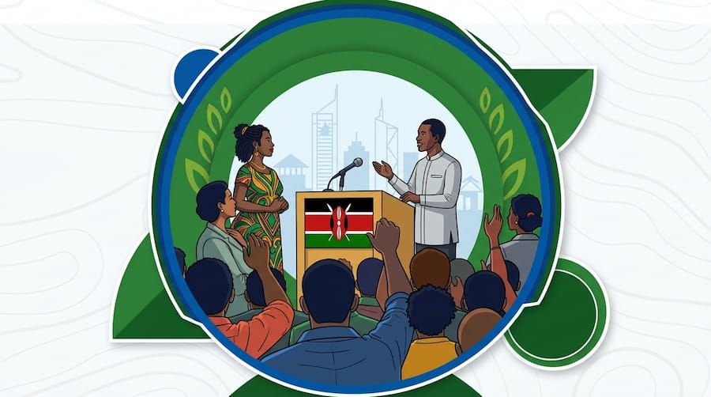
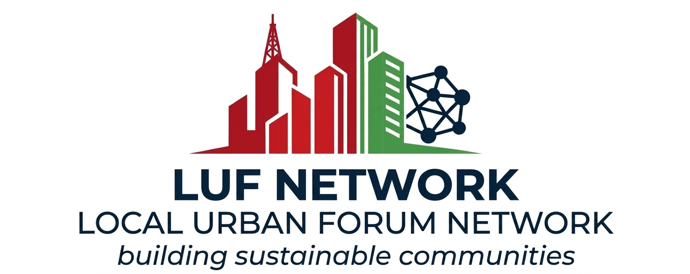

Bridging Grassroots Voice with Institutional Accountability
Local Urban Forum Network (LUF Network) mobilizes women, youth, and neighborhood responder teams across Nairobi’s informal wards—turning verified grassroots diagnostics into clinical equity, circular livelihoods, and municipal policy action.


Welcome to LUF NETWORK
(Local Urban Forum Network)
Our Core Mission
"We are dedicated to building communities, empowering individuals, and creating lasting social impact. At LUF NETWORK, our goal is to support people through sustainable community programs, education, and direct resources."
The 9 Pillars of Our Work
Our comprehensive structural framework driving targeted resource distribution, social justice, and urban community resilience.
1. Community Support
Providing food security distributions, clean clothing networks, and critical emergency response resources to families navigating urgent financial crises and systemic hardships.
📦 Targeted Food Security Links ▼
Operational Focus: Routing essential caloric matrices and nutritional stabilization blocks to vulnerable child-headed and elder-led households inside Kibra sectors.
👕 Clean Clothing Networks ▼
🚨 Emergency Response Channels ▼
2. Education & Skills
Hosting structured community classes, digital literacy bootcamps, and professional vocational training sessions aimed at equipping marginalized individuals to secure sustainable careers.
📚 Maternal Wellbeing Literacy ▼
Operational Focus: Facilitating vital healthcare management, mental hygiene guidance, and early childhood milestone training across local hubs.
💻 Digital Literacy Bootcamps ▼
3. Advocacy & Human Rights
Standing firmly at the forefront of social justice to protect fundamental human rights, promote legal equality, amplify vulnerable voices, and lobby for institutional policy improvements.
⚖️ Legal Equality Tracking ▼
Operational Focus: Securing systemic mapping protections under the Urban Areas and Cities Act (UACA 2011) to eliminate institutional marginalization elements.
🌍 Climate Justice Channels
4. Health & Wellness
Deploying mobile medical clinics to deliver essential primary healthcare access while running stigma-free mental health support spaces, community counseling networks, and psychological wellness training.
🛡️ Frontline Psychiatric Safety ▼
Operational Focus: Facilitating secure community psychiatric crisis emergency pathways, frontline counseling loops, and institutional clinical referral tracking inside Kibra.
💊 Epilepsy Support Infrastructure ▼
📊 Field Assessment Matrix ▼
5. Sustainability
Spearheading hyper-local green initiatives, trash management programs, urban clean-ups, and ecological conservation workshops to create clean, climate-resilient neighborhoods for future generations.
♻ Circular Plastics & E-Waste Value Chains ▼
Operational Focus: Managing decentralized neighborhood sorting hubs, onboarding informal waste collectors, and supplying clean, pre-sorted plastics (PET, HDPE, PP) and e-waste to commercial recycling partners while clearing high-density drainage paths.
🌳 Micro-Conservation Seminars ▼
6. Economic Empowerment
Providing micro-grants, startup equipment seed kits, and micro-enterprise business mentorship programs to help local youth and women launch micro-ventures and foster local financial independence.
💰 Maternal Micro-Grant Tracks ▼
Operational Focus: Securing capital equipment seed tokens and asset support for low-income women to interrupt poverty-induced mental health strain loops.
🛠️ Youth Micro-Enterprise Mentorship
7. Urban Resilience
Developing local disaster-preparedness emergency strategies, urban flash flood management channels, and hazard relief networks to insulate dense communities from systemic structural dangers.
⛈️ Climate Adaptation Matrices ▼
Operational Focus: Deploying 3-person responder teams to map sector-level flash flood vectors, drainage clogs, and structural fire hazards within dense settlements.
🚨 Rapid Disaster Mobilization ▼
8. Social Equity & Inclusion
Advancing targeted structural protective channels for marginalized groups, inclusive urban civic workshops, and equal protection mechanisms across community sectors.
🌍 Stigma Management Networks ▼
Operational Focus: Facilitating community dialogue panels to deconstruct discrimination loops surrounding neurological and severe psychiatric health conditions.
🕊️ Vulnerable Group Legal Protection ▼
9. Institutional Synergy
Bridging localized field operations with ministerial review boards, global health entities, and structural hospital administrative frameworks to scale urban community response maps.
🏥 Hospital Referral Tracking ▼
Operational Focus: Securing data-sharing connections with medical centers to ensure smooth patient routing, case monitoring, and accurate referral tracking loops.
📋 Ministerial Advisory Sync ▼
⚖️ Cross-Cutting Gender & Governance Architecture
Within the LUF Network 9-Pillar Architecture, Governance is anchored in Pillar 3 (Advocacy & Human Rights) and Pillar 9 (Institutional Synergy) through Urban Areas and Cities Act (UACA 2011) citizen participation and ministerial policy feedback loops. Gender Equity is anchored in Pillar 8 (Social Equity & Inclusion) and operationalized through Pillar 2 (Maternal Wellbeing Literacy) and Pillar 6 (Maternal Micro-Grant Tracks).
Mandatory Field Standard: Both gender-disaggregated impact tracking and transparent community accountability are audited across every ward-level intervention via the Mtaa Digital Ledger.
📋 View How Gender & Governance Cut Across All 9 Pillars ▼
- Pillar 1 (Community Support): Governance ensures transparent, non-discriminatory vulnerability registries; Gender prioritizes female-headed, child-headed, and elder-led households in food and textile distribution.
- Pillar 2 (Education & Skills): Gender drives Maternal Wellbeing Literacy for young mothers; Governance ensures equitable youth and women selection into digital literacy bootcamps.
- Pillar 3 (Advocacy & Human Rights): Core Governance pillar enforcing UACA 2011 citizen participation mandates and climate justice accountability.
- Pillar 4 (Health & Wellness): Gender shapes maternal and neuropsychiatric referral safety; Governance establishes formal hospital referral protocols (e.g., Mathari Hospital).
- Pillar 5 (Sustainability): Governance regulates decentralized neighborhood sorting hubs; Gender tracks women and youth onboarding in circular plastics and e-waste value chains (ESG metrics).
- Pillar 6 (Economic Empowerment): Core Gender economic pillar via Maternal Micro-Grant Tracks and women/youth enterprise mentorship; Governance enforces transparent grant disbursement and auditing.
- Pillar 7 (Urban Resilience): Governance coordinates multi-stakeholder ward disaster-preparedness committees; Gender addresses disproportionate climate and flash-flood risks faced by women and children.
- Pillar 8 (Social Equity & Inclusion): Core Gender and social inclusion pillar protecting marginalized citizens and ensuring women’s voices shape local urban forums.
- Pillar 9 (Institutional Synergy): Core Governance pillar translating ground-level field dashboards into municipal, county, and ministerial policy action.
🤝 Commercial & Consortium Partnerships
Grassroots Supply-Chain & Impact Execution Partner: LUF Network partners with licensed Kenyan recyclers, circular-economy enterprises, and international technology providers as a dedicated grassroots implementation subcontractor.
We deliver verifiable informal waste-picker onboarding, decentralized neighborhood collection hub management, household sorting campaigns, and gender/youth ESG impact tracking across Nairobi.
Where Your Donation Goes
1 Dry Food Parcel
Feeds an urban family for 2 weeks
Mental Health Outreaches
Funds 1 community peer-counseling circle
Field Assessments & Tracking
Deploys a 3-person responder team to execute structural field matrix tracking and data metrics for one week
Connect With Our Network
Follow the official Local Urban Forum Network (LUF NETWORK) feed for immediate announcements, structural updates, and city-wide advocacy trackers.
Direct Programmatic Support
Support our field matrix operations and community psychiatric safety tracks via M-Pesa mobile transfer directly to our official Executive Director & Program Custodian:
📢 Live Advocacy Feed
📍 SECTORS: Kibra & Nairobi Informal Wards | ✅ STATUS: Multi-Pillar Field Execution
- Health & Wellness Track (Pillar 4): Responder teams completed sector-level psychiatric crisis referral check-ins and epilepsy therapeutic support tracking across neighborhood nodes.
- Community Support & Food Security (Pillar 1): Verified vulnerability registries and coordinated dry food parcel and clean textile routing for child-headed and elder-led households.
- Circular Waste & Drainage Clearance (Pillar 5 & 7): Field Director & Operations Lead Oliver Erupe led 3-person responder teams in mapping blocked drainage paths and pre-sorting post-consumer plastics (PET/HDPE) at neighborhood collection points.
📍 STATUS: Circular Value-Chain & Consortium Readiness | 🗓 TIMELINE: 2027 Joint Innovation Rollout
♻ Grassroots Feedstock & Aggregation: Field Director & Operations Lead Oliver Erupe and our 3-person sector responder teams are finalizing ward-level collection hub protocols across Nairobi to link informal waste-picker networks with commercial plastic and e-waste processors ahead of 2027 joint circularity deployments.
📍 STATUS: Strategic Pre-Deployment | 🗓️ TIMELINE: Launch Early 2027 (Pending Donor Agreements)
🏃♂️ Grassroots Mobilization: Field Director & Operations Lead Oliver Erupe has successfully initialized ground coordination mechanisms across our operational centers, locking in absolute alignment with our civic protections and front-line safety pillars ahead of the formal rollout.
🧠 Clinical Equity Architecture: On the institutional front, Health & Wellness Strategy Lead Dr. Olivia Onditi is structuring specialized healthcare protocols, anchoring our critical multi-pillar pivot to address heavily masked neuropsychiatric crises within informal urban spaces.
🌐 Holistic Multi-Pillar Expansion: The Secretariat is actively synchronizing these upcoming field attachment actions with our broader 9 Pillars framework, ensuring total visibility for global funding oversight and municipal health directorates.
“Dismantling systemic structural imbalances and driving baseline accountability directly on the frontlines of grassroots urban advocacy.”